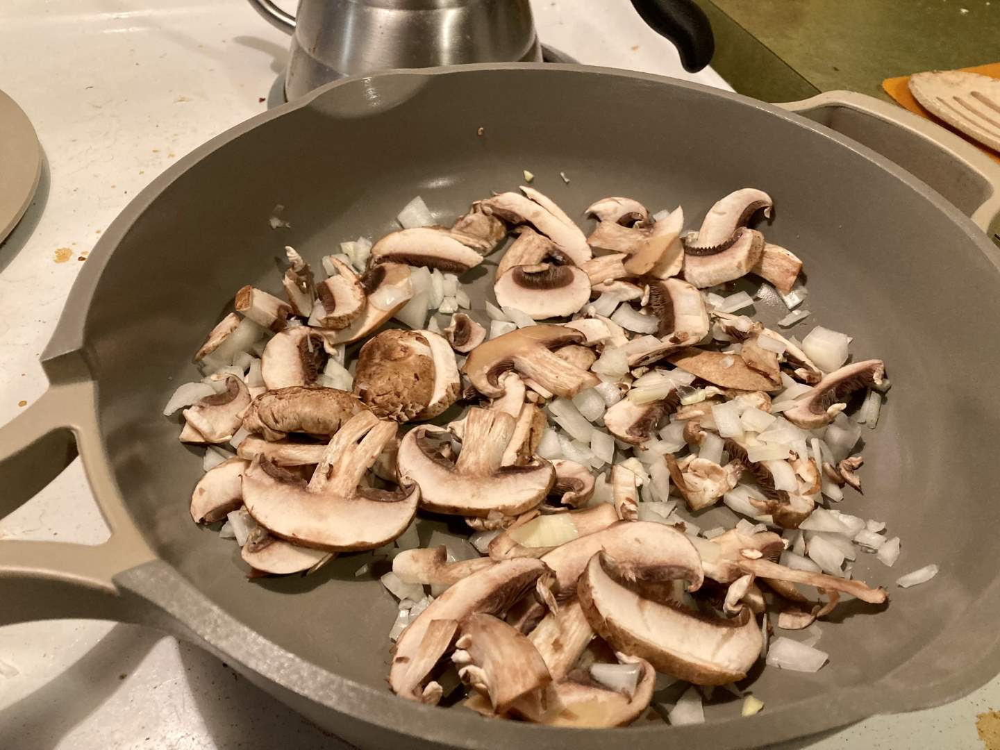
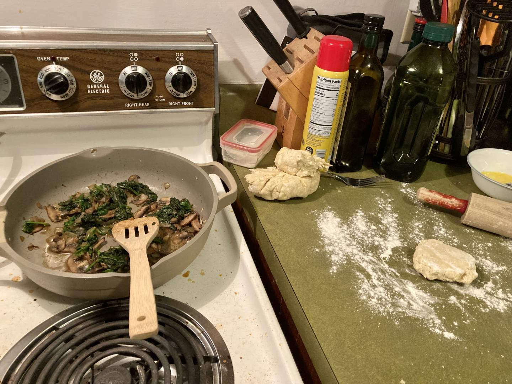
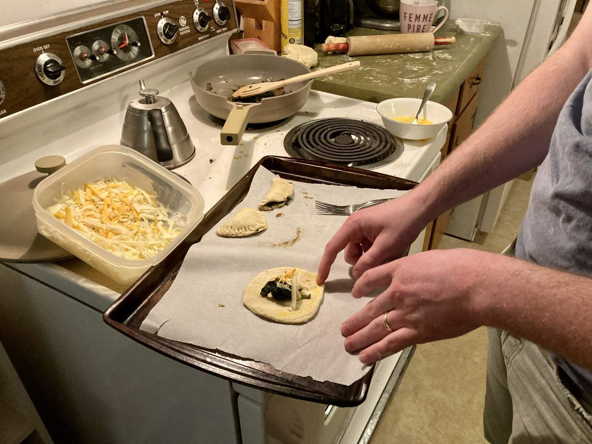
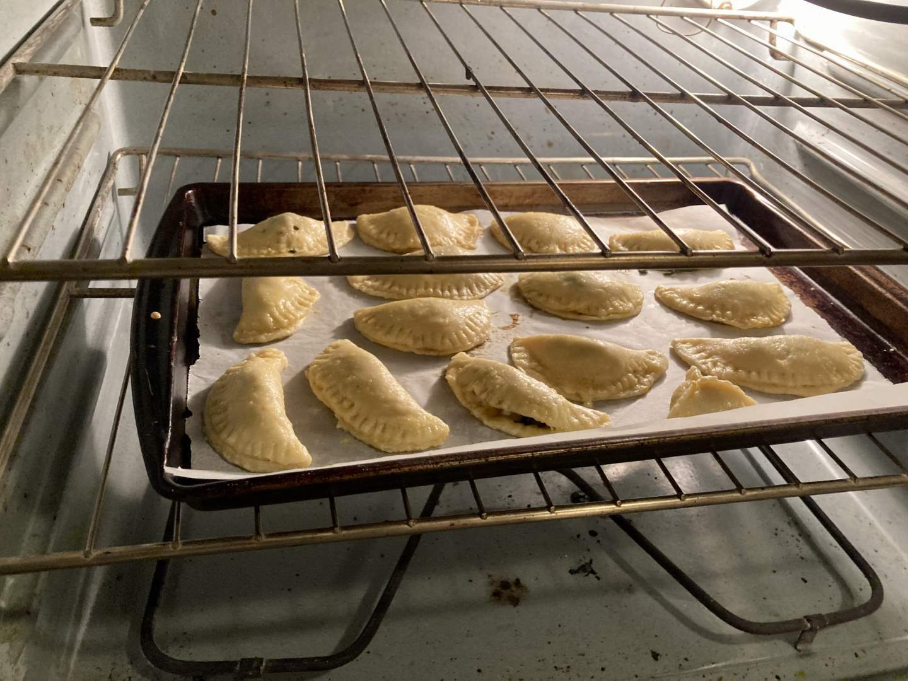
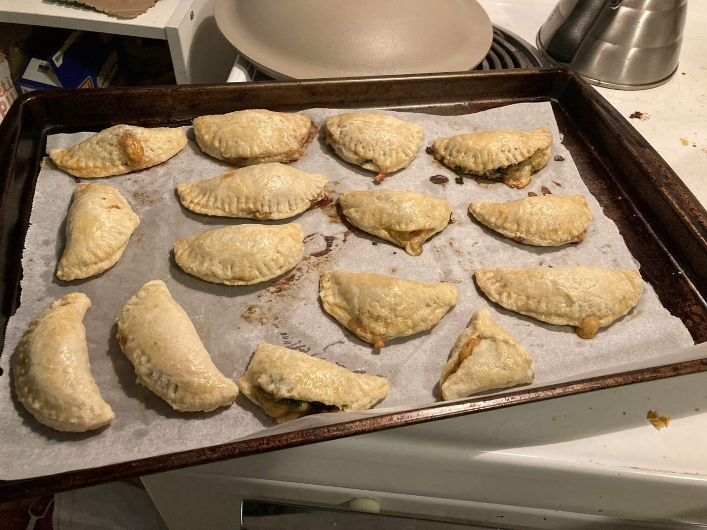
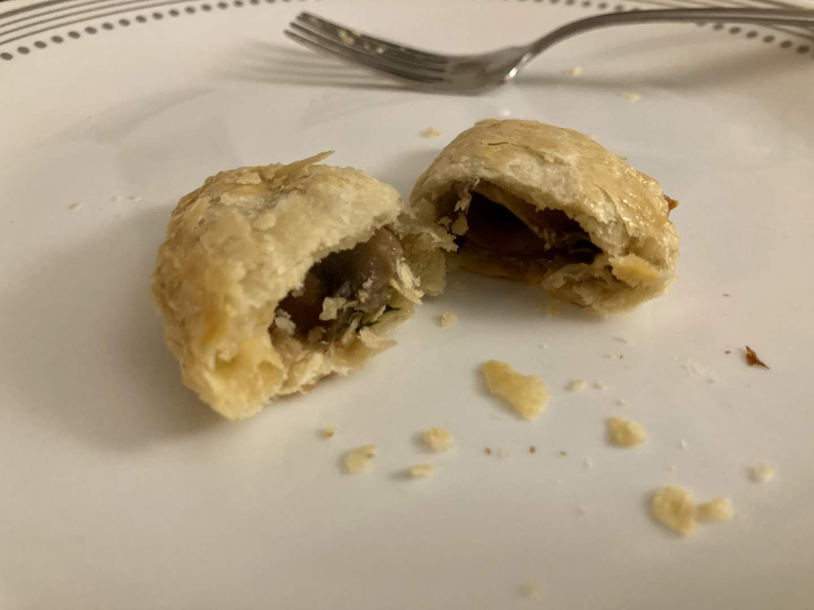
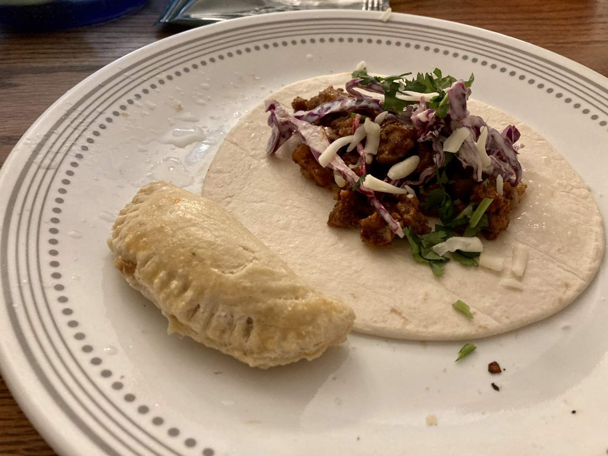

Pie 34: Spinach, Mushroom, & Cheese Empanadas
2024-02-17Recipe from Unwritten Recipes.
Taste:
Difficulty:
Vibes:
Suggested pairing: pork and cabbage tacos
At ALDI the other day I noticed a great deal on some brown mushrooms and bought half a pound with no clear plan for cooking them. Searching for recipes online I found one for intriguing baked mini empanadas.
The buttery crust recipe included egg, making it both tastier and riskier than standard pie crust to eat raw and probably more suitable for making little packets.
I thinly sliced the fungi and sautéed them with diced onions. Mushrooms really soak up a lot of moisture! Not nearly as easy to cook as most vegetables, in my opinion. I wilted some spinach in the pan after the onions were soft.
Each empanada was constructed from a rough circle of crust dough, a scant spoonful of savory filling, and a few shreds of cheddar and mozzarella cheese on top. I stuck the edges of the packet together with a bit of egg wash, but it wasn’t really enough for those that suffered from my struggle not to add too much filling. I also brushed egg wash on the tops of the empanadas before baking them at 350 F for about half an hour.
While they were in the oven I made pork tacos to complete the dinner’s theme. The tacos were pretty delicious, while the empanadas were unfortunately not top-tier in taste. They looked nice and the crust was tasty, but the filling just didn’t hit right. Maybe it needed more spices.
 Be that as it may, we did enjoy munching them for lunches and dinners during the remainder the of the week.
